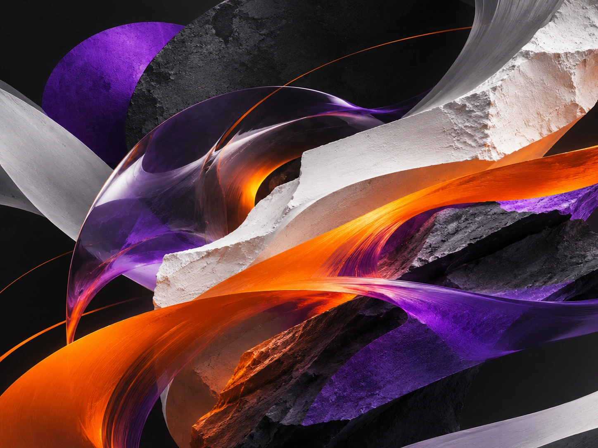
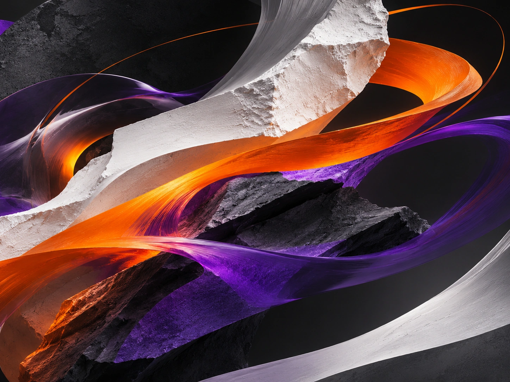
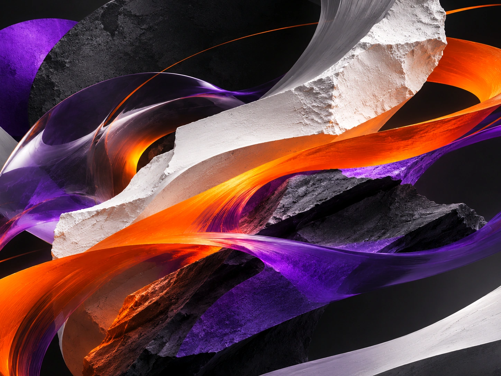

Selected work / 2026
Coisas que pensam alto.
Três experimentos visuais fictícios. Uma vontade em comum: construir identidades que escapem ao previsível.

Frequência
Identidade em movimento para um festival imaginário de música e cultura.
Entrar no projeto ↗
Órbita
Universo visual especulativo sobre movimento e novas formas de circular.
Entrar no projeto ↗
Matéria
Uma campanha editorial que transforma textura em linguagem.
Entrar no projeto ↗